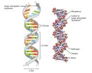
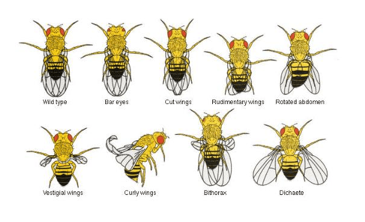
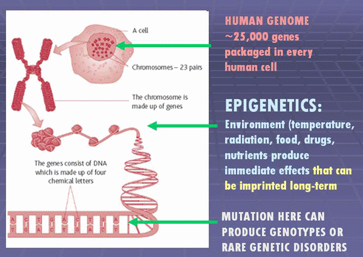

Daryush "Roosh" Valizadeh created ROK in October 2012. You can visit his blog at RooshV.com or follow him on Twitter and Facebook.


Compelling new scientific research has shown that female insects and mammals are able to absorb foreign DNA throughout the cells of their bodies. In human beings, this phenomenon has been conclusively shown to occur in women during pregnancy where genetic material from her growing fetus becomes fused within areas of her brain, affecting her chances of developing Alzheimer’s disease.
The evidence now shows that female animals can incorporate sperm DNA from her prior sex partners. This foreign DNA winds up in future children after the woman successfully reproduces with a completely different male. In the human world, this means that the children a man has with a promiscuous woman could possess genes from previous sexual partners he has never seen or met.
There are existing sociological studies that show a marriage is far more likely to fail when a woman had more than two prior sexual partners (1, 2, 3, 4), but now renewed support for the once-questionable field of telegony is showing that there are also genetic reasons not to start a family with a promiscuous woman: children you have with her may have their gene pool polluted by her random affairs and one-night stands.

Telegony is an idea first proposed by Aristotle that claims offspring can inherit genes from the mother’s previous sexual partners. This idea was not scientifically supported until evidence piled up of microchimerism, the phenomenon of foreign DNA becoming incorporated into the genome of an individual. This was first noted to happen in the case of blood transfusions. If you have received blood while in a state of trauma, your donor’s DNA can become incorporated into your genome. Surprisingly little research has been done on microchimerism since then, but all signs point to this being a widespread and common genetic phenomenon throughout the animal kingdom.
A groundbreaking study on flies last year showed the process of females incorporating DNA from previous male partners and then exhibiting that male DNA into future spawn they had with completely different males.
Scientists at the University of New South Wales discovered that, for fruit flies at least, the size of the young was determined by the size of the first male the mother mated with, rather than the second male that sired the offspring.
[…]
“Our new findings take this to a whole new level – showing a male can also transmit some of his acquired features to offspring sired by other males,” she says. “But we don’t know yet whether this applies to other species.”
[…]
Dr Stuart Wigby of the Department of Zoology at Oxford University added: “The principle of telegony is theoretically possible for pretty much any internally fertilising animal, but these hasn’t historically been much evidence for it.
Scientists involved in the study are making the guess that sperm DNA gets absorbed into female eggs without fertilizing them:
The researchers suggested that the effect is due to molecules in the seminal fluid of the first mate being absorbed by the female’s immature eggs, and then influencing the growth of offspring of a subsequent mate.

It was already observed that the human female body acts as a sponge for foreign DNA placed within it:
It is possible that Mc [microchimerism] in the brain is able to differentiate into various mature phenotypes or undergoes fusion with pre-existing cells and acquires a new phenotype, as suggested by murine and human studies in which bone marrow-derived cells circulated to the brain and generated neuronal cells by differentiation, or fused with pre-existing neurons.
[…]
Although the relationship between brain Mc and health versus disease requires further study, our findings suggest that Mc of fetal origin could impact maternal health and potentially be of evolutionary significance.
The above study has two seismic implications. The first is that a woman can absorb enough DNA during her lifetime that it changes her phenotype (i.e. her appearance and overall health state). There could be some truth to the phrase “slut face” in which highly promiscuous women suffer a change to their appearance because of all the variable sperm from different males that have been deposited inside them.
The second implication stems from the fact that it’s scientifically conclusive that single mothers have DNA of their bastard children residing permanently within their bodies. Any man who reproduces with a single mom will have a child that contains DNA from the bastard spawn, which of course includes DNA from the absentee father. This means that men can be genetically cuckolded without being traditionally cuckolded, and that having a baby with a single mom is essentially giving the father of her first child a bonus prize in the game of evolution.
Microchimerism has also been noted in dogs, where older siblings pass on their DNA to younger siblings, suggesting that first-borns possess the highest genetic purity, a suspicion perhaps suspected by the royalty of old. Not only that, but the mother dogs incorporated Y-chromosome material from her male children. The mother dog essentially becomes more masculine by having sons.
The researchers found cells with Y-chromosomes in the mother after these births, meaning the mother had male cells present in her female body. The researchers also found genetically similar male cells in the mother’s female puppies from a later litter. Those puppies were newborn and had never been pregnant, strongly suggesting that they acquired the cells that were left behind by their older brothers while in the womb.
If a woman absorbs Y-chromosome genes from male sperm via casual sex, this would easily explain why women with high notch counts exhibit more masculine traits, something that any international playboy can anecdotally confirm. The promiscuous girl becomes more masculine because various masculine genes are being inserted into her genome and affecting her phenotype.
Some of the older ideas on telegony, dating over a century, now don’t seem so left field:
French biologist and philosopher Felix Le Dantec in his work “Individual Evolution, Heredity and Neo-Darwinists” (1899) mentions several facts that demonstrate telegony. But the evidence was quite pseudo-scientific even for that epoch. The author gave two examples with animals and one for humans.
Le Dantec wrote that some farmer told him that once his swine copulated with a boar and their pigs absolutely resembled the father in color. But when the same swine copulated with another boar some pigs of the second farrow still resembled the color of the male pig the swine had copulated first.
He also wrote about Lord Morton who first interbred a mare and a zebra and got a hybrid of horse and zebra. Next time he interbred the same mare with a horse. As a result of the second copulation the lord still got a colt that had lines resembling those of a zebra.
Microchimerism is on the leading edge of genetic research that has lately included epigenetics, which is the switching on and off of certain genes due to environmental cues. Epigenetics has raised questions against evolutionary theory because it shows genetic adaption can occur within individual organisms without the need for natural selection. New research is revealing how little we actually know about how the human genome works, suggesting a more complex picture than we’ve imagined.
Sociological research was the first to show that marrying women with a robust sexual history increased the likelihood of a failed marriage. Now genetic research adds more evidence to show that such women will birth children that—to a degree we don’t yet understand—are not entirely of the father’s. Because this new field of research is politically incorrect in painting strongly negative consequences for women leading a “strong and independent” promiscuous lifestyle, we are unlikely to see liberal universities approve much in the way of further research in this area.

For thousands of years, a woman’s purity was cherished above all else when it came to creating a family. Now the scientific community is confirming the validity of that practice. Until the science is settled, men who insist on reproducing with a promiscuous woman should at least demand to interview her previous sexual partners so he can become familiar with the men whose genes may be passed on to his future children.
Read Next: The Deregulation Of The Sexual Marketplace